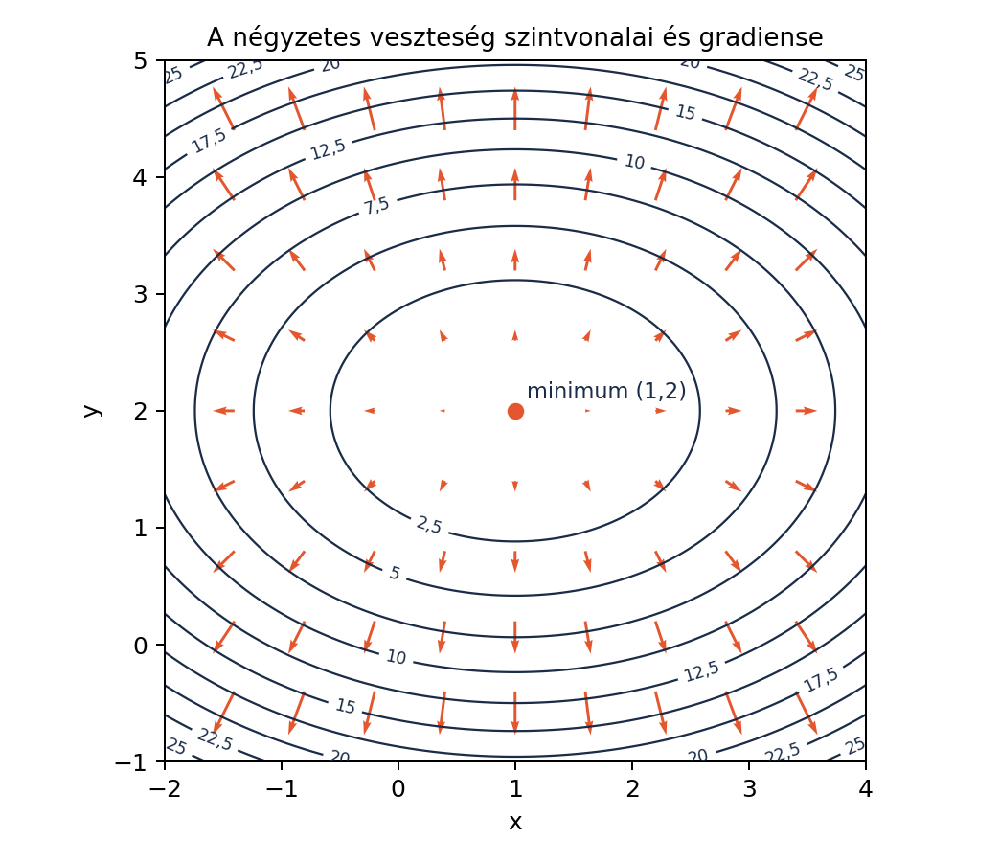

A gépi tanulás egyik leggyakoribb feladata, hogy adatokból
előrejelzést készítsünk: lakásárat becslünk alapterületből,
hitelképességet jövedelemből, e-mailről eldöntjük, spam-e. Az ilyen
feladatok közös matematikai magja egy veszteségfüggvény
minimalizálása. Ha a modell rosszul jósol, a veszteség nagy; ha jól,
kicsi. Az optimalizáláshoz a többváltozós analízis eszközeit használjuk:
a gradienst a leggyorsabb csökkenés irányának megtalálására, a
Hesse-mátrixot a konvexitás ellenőrzésére, a Lagrange-multiplikátort
pedig arra, hogy a modellt egyszerűen és stabilan tartsuk. Ebben a
projektben az Optimalizálás a gyakorlatban:
legkisebb négyzetek és gradiensmódszer alfejezetben tanultakat
fejlesztjük tovább két alapvető gépi tanulási modell, a lineáris és a
logisztikus regresszió segítségével.
39.4.2 Szemléletes kép
Tekintsük a négyzetes veszteség szintvonalait két paraméter,
és
esetén. A cél a legbelső szintvonal közepén lévő minimum elérése. A
gradiens minden pontban a legmeredekebb emelkedés irányába mutat, ezért
a gradiens-ereszkedés a negatív gradiens irányába
lép.

A négyzetes veszteség szintvonalai és
gradiense - Az f(x,y) = (x-1)^2 + 2(y-2)^2 függvény szintvonalai. A
gradiens nyilak a legmeredekebb emelkedés irányába mutatnak; a
gradiens-ereszkedés a mínusz gradiens mentén halad a minimum felé. A
szintvonalak ellipszisek, mert a két irányban eltérő a
görbület.
Az ábrán a szintvonalak ellipszisek: a függőleges irányban gyorsabban
nő a függvény, mint vízszintesen. Ez a különbség határozza meg, mekkora
tanulási rátát választhatunk, és milyen gyorsan konvergál az
iteráció.
39.4.3 Veszteségfüggvény és a
legkisebb négyzetek mátrixos alakja
Definíció. Legyen
a megfigyelések mátrixa, ahol az
-edik
sor az
-edik
megfigyelés
darab jellemzőjét tartalmazza, és legyen
a megfigyelt célértékek vektora. A lineáris regressziós modell
előrejelzést ad, ahol
a paramétervektor. A négyzetes veszteségfüggvény (least
squares loss)
ahol
az
mátrix
-edik
sora. A feladat a
minimalizálása
szerint.
A gyakorlatban az
első oszlopát gyakran csupa
-esre
választjuk, hogy a modellben szerepeljen tengelymetszet is. Ekkor
,
ahol
a tengelymetszet.
Tétel. Ha
oszlopai lineárisan függetlenek, akkor az
függvénynek egyetlen minimumhelye van, és ez a
normálegyenlet megoldása.
Bizonyítás. Fejtsük ki a veszteséget:
Az
szimmetrikus mátrixszal képzett
kvadratikus forma gradiense
,
a
lineáris tagé
,
tehát
A Hesse-mátrix a gradiens további deriválásával
Mivel
pozitív definit, ha
oszlopai lineárisan függetlenek, a Hesse-mátrix pozitív definit, így a
stacionárius pont valódi minimum. A
feltételből éppen a normálegyenletet kapjuk. ∎
A normálegyenletet megoldhatjuk direkt módon, de nagy adathalmazoknál
az
mátrix invertálása költséges, ezért gyakran iteratív optimalizálást,
például gradiens-ereszkedést használunk.
Példa. Három megfigyelés:
,
,
.
Keressük a legkisebb négyzetes egyenest:
.
Ekkor
Kiszámítjuk:
A normálegyenlet:
A determináns
,
így egyértelmű megoldás:
A legkisebb négyzetes egyenes tehát
Ellenőrzésképpen a jósolt értékek
-ra
rendre
,
,
;
a hibák
,
amelyek négyzetösszege
,
ami a lehető legkisebb.
39.4.5 Logisztikus regresszió
A logisztikus regresszió bináris osztályozási feladatokra
használatos: a kimenet
,
például „nem spam” vagy „spam”. A modell a pozitív osztály
valószínűségét a logisztikus függvénnyel becsli:
ahol
.
A
értéke mindig
és
közé esik, ezért természetes valószínűség-modell.
Lemma. A logisztikus függvény deriváltja
Bizonyítás. Írjuk
alakba. A láncszabállyal
Mivel
és
,
ezért
∎
Definíció. A logisztikus regresszió
veszteségfüggvénye a negatív log-likelihood, amelyet bináris
keresztentrópiának is nevezünk. Ha
a pozitív osztály becsült valószínűsége, akkor
Ennek gradiensét és Hesse-mátrixát a következő tétel adja meg.
Tétel. A logisztikus regresszió veszteségére
ahol
,
és
pozitív diagonális mátrix. Ebből következően
konvex, és ha
oszlopai lineárisan függetlenek, szigorúan konvex, így legfeljebb egy
minimumhelye van. Minimum akkor biztosan létezik, ha az adatok nem
választhatók szét lineárisan; szétválasztható adatoknál a veszteség
infimuma
,
de nem vétetik fel (a súlyok a végtelenbe tartanak), ezért ilyenkor
regularizációt használunk.
Bizonyítás. Rögzítsünk egy megfigyelést, és legyen
,
valamint
.
A pontonkénti veszteség
A láncszabály szerint először
-t
szerint, majd
-t
szerint deriváljuk. Az első derivált
szerint:
A lemma szerint
,
ezért
Így a teljes gradiens
.
A Hesse-mátrixhoz deriváljuk ismét
szerint:
Mátrix alakban
,
ahol
diagonális elemei
.
Mivel
pozitív definit, a
is pozitív szemidefinit, és pozitív definit, ha
oszlopai lineárisan függetlenek. ∎
ahol
a tanulási ráta (learning rate). Mind a lineáris, mind
a logisztikus regresszió veszteségére alkalmazhatjuk.
Kvadratikus célfüggvény esetén, például
szimmetrikus pozitív definit
-val,
a konvergencia sebessége az
sajátértékeivel jellemezhető. Legyen
a legkisebb,
a legnagyobb sajátérték. Ha
,
akkor az iteráció a minimumhoz tart; az optimális tanulási ráta
és ezzel a hibavektor
normája minden lépésben legalább
szorzóval csökken. Minél közelebb van
és
,
annál gyorsabb a konvergencia; ha
,
akkor egyetlen lépés elegendő.
Statikus változat (mint a PDF-ben)
Gradiens-ereszkedés az
szintvonalain
(,
)
a
pontból, 10 lépéssel:
lassú,
gyors
(),
divergens
Figyelem. A lineáris regresszió
veszteségének Hesse-mátrixa
,
tehát a sajátértékek
.
A gyakorlatban a jellemzőket érdemes standardizálni, mert az eltérő
skálák a legkisebb és legnagyobb sajátérték közötti rést, így a
konvergencia lassúságát nagyban növelik.
Készítsd elő az
mátrixot és az
vektort; az
első oszlopa legyen csupa
-es.
Válassz kezdeti
-t,
például
-t.
Válassz tanulási rátát: becsüld meg
értéket, és legyen
;
standardizált jellemzők esetén
gyakran jó kiindulás, de mindig ellenőrizd a
korláttal (a lakásár-példában
már divergálna).
Minden
lépésben számítsd ki a gradienst:
.
Frissítsd a paramétereket:
.
Állj meg, ha
kicsi (például
),
vagy ha a veszteség csökkenése elhanyagolható.
Ellenőrizd a kapott
-t
a normálegyenletbe való behelyettesítéssel, ha a méret kicsi.
39.4.8 Regularizáció mint
Lagrange-feltétel: ridge regresszió
A nagy dimenziós modellek hajlamosak a túlillesztésre: a paraméterek
óriásiak lesznek, hogy a zajt is pontosan leképezzék. A ridge
regresszió bünteti a paraméterek méretét:
ahol
a regularizációs együttható. A gradiens:
A normálegyenlet most
A
hozzáadása minden sajátértéket
-val
növel, így a legkisebb sajátérték legalább
,
ami javítja a numerikus stabilitást és gyorsítja a gradiens-ereszkedést.
A gyakorlatban a tengelymetszetet
()
nem büntetjük: a büntetőtag
,
a normálegyenletben
helyett
áll. (Az alábbi levezetés a rövidség kedvéért a teljes
-et
bünteti.)
A ridge regularizáció ekvivalens egy korlátozott
optimalizálási feladattal. Tekintsük a
feladatot. A Lagrange-függvény
ahol
a Lagrange-multiplikátor. A
szerinti stacionaritási feltétel:
amely pontosan a ridge normálegyenlet
választással. A kettő közötti kapcsolat tehát: minden
-hoz
tartozik egy olyan
korlát, amelyre a két feladat megoldása megegyezik, és fordítva. A
megfeleltetés nem lineáris, de a gyakorlatban a
hangolása ekvivalens a megengedett
sugár hangolásával.
Továbbvitt eredmény. A gradiens-ereszkedés
konvergenciaelemzése, a konvexitás Hesse-mátrixszal való ellenőrzése és
a Lagrange-multiplikátoros regularizáció a A
kalkulus fogalmi térképe: összefoglalás és
képletgyűjtemény-használat alfejezetben az optimalizálási szemlélet
összefoglalásakor tér vissza.
39.4.9 Normális eloszlás és maximum
likelihood
A legkisebb négyzetek módszere nemcsak geometriai, hanem
valószínűségi szempontból is természetes. Tegyük fel, hogy a
megfigyelések
alakban keletkeznek, ahol a zaj
független,
várható értékű,
szórásnégyzetű normális eloszlású. Ekkor
sűrűségfüggvénye
A likelihood az összes megfigyelés együttes
sűrűsége:
A log-likelihood
Mivel az első tag konstans
-ben,
a log-likelihood maximalizálása ekvivalens a
négyzetes hiba minimalizálásával. Ez magyarázza, miért a legkisebb
négyzetek a normális zaj esetén a legvalószínűbb paraméterbecslés. A
normalizáló konstansban szereplő
Gauss-integrált a Polárkoordináták és a
Gauss-integrál alfejezetben vezettük le.
39.4.10 Valós életbeli alkalmazás:
lakásár-becslés
Egy ingatlaniroda öt lakás adatait vizsgálja: az alapterület
(,
m²) és az eladási ár
(,
millió Ft):
Alapterület (m²)
40
55
70
85
100
Ár (millió Ft)
60
80
105
130
150
Lineáris modellt illesztünk:
.
A nyers adatokkal a normálegyenlet:
A megoldás
és
,
tehát
Az értelmezés: minden további négyzetméter körülbelül 1,53 millió
forint árnövekedést jelent, a konstans tag pedig a modell matematikai
extrapolációja
-ra,
aminek önmagában nincs gyakorlati jelentése.
A gradiens-ereszkedéshez standardizáljuk a jellemzőt:
.
Ekkor
oszlopai jóval jobban kondicionáltak, és
tanulási rátával (a korlát
)
néhány tucat iteráció elég. A Python-illusztráció ezt mutatja.
A ridge regularizációval
esetén (a tengelymetszetet nem büntetve) a standardizált megoldás
,
;
visszaszámolva
,
.
A meredekség kisebb lett
(),
ami a túlillesztés ellen hat, ha sok jellemzőnk lenne. (Ha a
tengelymetszetet is büntetnénk, a standardizált
-ről
-re
esne, és a modell minden lakást alulbecsülne: ez torzítás, nem kívánt
hatás.)
39.4.11 Python-illusztráció
import numpy as npx = np.array([40., 55., 70., 85., 100.])y = np.array([60., 80., 105., 130., 150.])x_norm = (x -70) /20X = np.column_stack([np.ones_like(x_norm), x_norm])w = np.zeros(2)eta =0.1for k inrange(100): g =2* X.T @ (X @ w - y) w = w - eta * ga = w[0] - w[1] *70/20# visszaszámolás eredeti skálárab = w[1] /20L = np.mean((a + b*x - y)**2)print(f"w_norm = [{w[0]:.4f}, {w[1]:.4f}]")print(f"a = {a:.4f}, b = {b:.4f}")print(f"átlagos négyzetes hiba = {L:.4f}")
w_norm = [105.0000, 30.6667]
a = -2.3333, b = 1.5333
átlagos négyzetes hiba = 2.0000
(Futtatva: Python 3.14, NumPy 2.3.5.) A kimenet egyezik a
normálegyenletből kapott pontos megoldással
(,
,
átlagos hiba
).
A kód numerikus közelítés, ezért a lebegőpontos kerekítés kicsi eltérést
okozhat; a gradiens-ereszkedés itt nem bizonyítás, hanem az elméleti
konvergencia szemléltetése.
39.4.12 Tipikus hibák
Túl nagy tanulási ráta. Ha
,
a gradiens-ereszkedés oszcillálni kezd, vagy elszáll. A helyes gondolat:
a sajátértékekből becsüljük meg a felső korlátot, és válasszunk annál
kisebb
-t.
A logisztikus függvény deriváltjának
elfelejtése. A veszteség gradiensénél a láncszabály miatt a
tényező fontos. Ha valaki közvetlenül
helyett más kifejezést használ, rossz gradienst kap.
A skálázás elhanyagolása. Különböző nagyságrendű
jellemzők esetén a Hesse-mátrix sajátértékeinek aránya nagyon nagy, ami
lassú konvergenciát okoz. A jellemzőket standardizálni kell.
A Hesse-mátrix pozitív definitségének feltételezése
ellenőrzés nélkül. A nem teljes rangú
esetén a négyzetes veszteségnek nincs egyetlen minimuma. Ilyenkor
regularizációval vagy jellemzőkiválasztással kezeljük a
problémát.
A ridge és a Lagrange-multiplikátor kapcsolatának
félreértése. A
és az
korlát között nem lineáris a megfeleltetés. A két feladat
megoldáshalmaza azonos, de a konkrét értékeket numerikusan kell
összehangolni.
39.4.13 Önellenőrzés
Igaz-e, hogy a négyzetes veszteség gradiense
?
Indokolj!
Írd fel a logisztikus függvény deriváltját, és bizonyítsd be!
Miért garantálja a konvexitást a
Hesse-mátrix pozitív szemidefinitsége?
Ha a legkisebb és legnagyobb sajátérték
és
,
mennyi az optimális tanulási ráta és a hibaszorzó?
Mi a kapcsolat a normális zajú maximum likelihood és a legkisebb
négyzetek között?
Hogyan változtatja meg a ridge regularizáció a
normálegyenletet?
39.4.14 Feladatok
1. feladat (A). Számítsd ki az
gradiensét a
,
,
pontban.
2. feladat (A). Vezesd le a
függvény második deriváltját, és mutasd meg, hogy az inflexiós pontja
-nál
van.
3. feladat (B). Adottak a
pontok. Illessz legkisebb négyzetes egyenest a normálegyenlet
segítségével, és ellenőrizd a hibákat.
4. feladat (B). A logisztikus regressziónál legyen
két megfigyelés:
és
.
A modell
alakú. Számítsd ki a veszteség gradiensét a
pontban, és hajts végre egy gradiens-ereszkedési lépést
-tel.
5. feladat (C). Bizonyítsd be, hogy az
függvény gradiens-ereszkedése
esetén konvergál a minimumhoz, ha
szimmetrikus pozitív definit és
a legnagyobb sajátértéke.
6. feladat (D). Egy webáruház 6 korábbi vásárlójának
adatai: az életkor
(,
év) és az átlagos kosárérték
(,
ezer Ft):
.
(a) Illessz lineáris regressziót, és értelmezd az együtthatókat. (b)
Számítsd ki a ridge megoldást
-tel
(csak a meredekséget büntetve), és hasonlítsd össze a meredekséget.
39.4.15 Megoldások
Önellenőrzés – válaszok
Hamis. A helyes gradiens
,
mert
mérete
,
a gradiens pedig
-dimenziós.
,
bizonyítás a lemmából.
Mert
diagonális elemei
,
így
pozitív definit, és
pozitív szemidefinit; teljes oszloprangú
-re
pozitív definit, ezért szigorúan konvex.
;
a hibaszorzó
.
Normális zaj esetén a log-likelihood maximalizálása ekvivalens a
négyzetes hiba minimalizálásával, mert a log-likelihoodban a hiba
négyzetösszege szerepel.
.
1. feladat megoldása.
,
,
,
így
.
A gradiens
.
Ugyanez
.
2. feladat megoldása.
.
Deriválva:
Az inflexiós pontban
.
Mivel
,
ezért
,
azaz
,
ami
-nál
teljesül, mert
.
3. feladat megoldása.
,
.
,
.
A determináns
.
A megoldás:
A jósolt értékek:
-ra
,
,
;
a hibák
,
,
,
négyzetösszeg
.
Ellenőrzés: ez a legkisebb.
4. feladat megoldása.
A paraméterek
;
,
.
A
-nál
,
.
A gradiens általános képletéből:
A gradiens-ereszkedési lépés:
Ez az adat lineárisan szétválasztható
(,
),
ezért a veszteség infimuma
,
de nem vétetik fel: további lépésekkel a súlyok nem állnak be véges
értékre.
5. feladat megoldása.
Legyen
a minimumhely. A gradiens
,
ezért az iteráció
Kivonva mindkét oldalból
-t:
Legyen
.
Mivel
szimmetrikus, sajátvektorai ortonormált bázist alkotnak. Ha
felbontása e bázisban
,
akkor
A norma négyzete
.
Ha
,
akkor minden sajátértékre
,
ezért
is igaz, de ez önmagában még nem ad konvergenciát (egy szigorúan
csökkenő pozitív sorozat pozitív számhoz is tarthat). Legyen
.
Mivel
,
minden
-re
,
és véges sok sajátérték miatt
.
Így
,
ahonnan
.
∎
6. feladat megoldása.
Az adatok:
,
.
Kiszámítva:
,
,
,
,
.
Normálegyenlet:
.
Determináns
.
Az egyenes:
.
Értelmezés: egy év életkor-növekedés körülbelül 0,62 ezer Ft átlagos
kosárérték-növekedést jelent, a konstans 3,19 ezer Ft az
extrapoláció.
Ridge
-tel,
a tengelymetszetet nem büntetve:
,
azaz
Determináns
.
A meredekség
-ről
-ra
csökkent, vagyis alig változott, mert a modell kicsi és csak egy
jellemzőt tartalmaz. A regularizáció elsősorban sok jellemző vagy közel
szinguláris
esetén fontos. (A tengelymetszet is büntetve
adódna: a meredekség NŐ, mert a büntetett tengelymetszet csökkenését a
meredekség kompenzálja, ezért nem büntetjük.)
39.4.16 Rövid összefoglaló
A lineáris regresszió a négyzetes veszteséget minimalizálja:
.
Gradiense
,
Hesse-mátrixa
,
a minimum a normálegyenlet
megoldása. A logisztikus regresszió
valószínűséget becsül, deriváltja
;
a negatív log-likelihood gradiense
,
Hesse-mátrixa
,
ahol
.
A Hesse-mátrix pozitív (szemi)definitsége adja a konvexitást. A
gradiens-ereszkedés
;
kvadratikus veszteségnél a konvergencia a Hesse-mátrix sajátértékeitől
függ:
,
az optimális
,
a hibaszorzó
.
A ridge regularizáció
büntetéssel ekvivalens a
korlátos feladat Lagrange-multiplikátoros alakjával, és a normálegyenlet
lesz. Normális zajú modellben a maximum likelihood becslés a négyzetes
hiba minimalizálására vezet. Továbbvitt eredmény. Ez az
optimalizálási szemlélet – gradiens, Hesse-mátrix, konvexitás,
Lagrange-korlátozás – a A kalkulus fogalmi térképe:
összefoglalás és képletgyűjtemény-használat alfejezetben a teljes
kurzus fogalmi összegzésekor használjuk.
39.4.17 Források és ellenőrzési
hiányok
A fejezet a többváltozós analízis és a gépi tanulás standard
eredményeit használja (például Boyd–Vandenberghe: Convex Optimization,
Bishop: Pattern Recognition and Machine Learning). Nem adok meg
oldalszámot vagy kiadást, mert ezeket nem ellenőriztem. A Python-kód
API-ja (NumPy) a jelenlegi dokumentáció szerint működik, de a kimenet
csak a szövegbeli kézi számításon alapul.